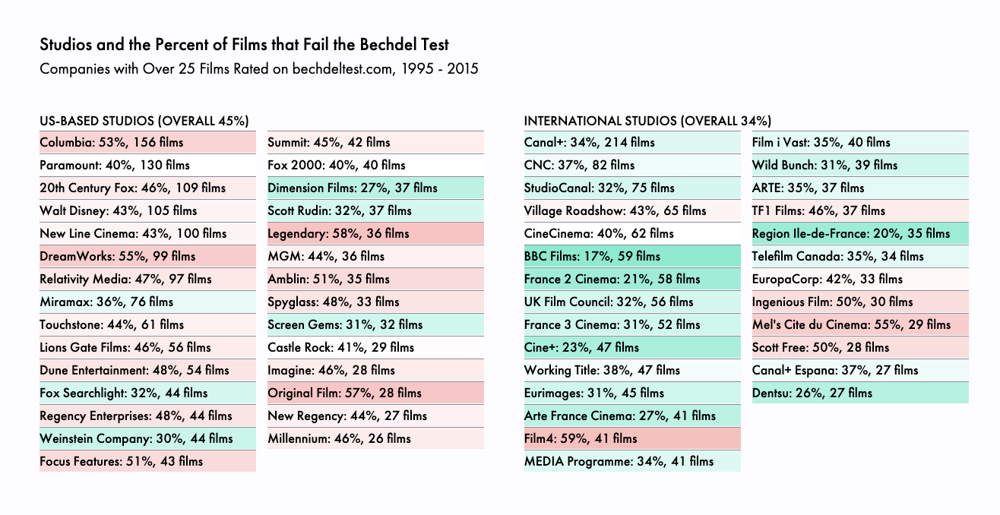

Why Inclusiveness Matters
When women are not visible-onscreen, we reinforce stereotypes off-screen. Hollywood is promoting a culture of female invisibilty, where women can't save the planet, win the big game, or fight the bad...wait for it...guy. Instead, they're props who can only gab about men.
There's a small sample: only 200 movies. So let's look at every film (about 4,000 movies) rated on bechdeltest.com.
Here's a look at the individuals creating such films: the most prolific directors, producers, and writers of Hollywood.

It's important to call out the studios. They make, buy, and distribute films. For example, while the new Star Wars sequel was boss (with Rey and Finn as leads!), LucasFilms hasn't had the best track record: 4 out of 7 Star Wars fail the Bechdel Test.
European studios are far more pregressive than the US. France is killing it. Canal+ has about 200 films in our dataset, and a low 34% fail the Bechdel Test. US studios are a relative embarassment: Warner Bros. (53% fail), and DreamWorks (55%).